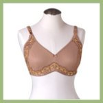
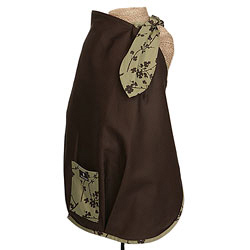

Breast Feeding Help: The Essentials for Successful Nursing
There are two categories of nursing moms: those who had no problems whatsoever, and those who need a little breast feeding help. Both
categories can have successful nursing experiences.
What blessings we have in the 21st century! We have a wealth of knowledge at the tip of our typing fingers. We have products that make even the
"hassle" situations hassle-free.
For moms like myself, who find themselves in that second category, we have more opportunities and support to
be successful than at any other time.
As I'm gearing up for my third breastfeeding round, I found myself looking with fresh eyes on some of the things I've used in the past, and on some
things I'll be purchasing this time around.
This article is written to give those of you searching for some breast feeding help with a list of the products and resources breastfeeding veterans
have relied on for years.
Breast Feeding Help: There's Peace in Knowledge
Before I start discussing products, let's start with knowledge. Here at the Essential Infant Resource (EiR) we have an extensive list of articles
that can help provide answers to some of your more pressing questions, and break those pesky myths that encourage discouragement.
And since I have a real weakness for books (can you ever have enough of them?) take a few minutes to look around at my reviews on popular
breastfeeding books. You may find one or two that speak specifically to your situation and are worth the purchase.
Breast Feeding Help: The Nursing Essentials
Breast Feeding Help #1: A Good Nursing Bra

If you purchase nothing else for your nursing adventure, a proper breastfeeding bra is a non-negotiable. Do you really want to be hiking
that regular bra up and down every three hours?
Not only will you ruin that expensive sexy bra, you'll be uncomfortable. And that's not going
to help you be successful nursing in the long run.
In this article, I discuss everything you need to know about choosing a good nursing bra. From sizing yourself to reviewing that top brands, it
is a comprehensive article on the topic of breastfeeding bras. I'm confident it will be helpful to you.
Breast Feeding Help #2: A Quality Nursing Cover

Unless you really don't mind whipping it out in front of your father-in-law, you're going to need a cover of some sort. You can purchase a large blanket
or a nursing shawl to cover up. Personally, the blankets are a pain (they always slip off), and the shawls are hot and annoying (say hello to some
funny hair styles).
After fighting it, I finally converted to purchasing a real nursing cover. Don't underestimate the power of some quality fabric and a simple
design. If you're a mini Martha Stewart and can sew, feel free to make your own.
For the rest of us, this articlediscusses the top three nursing cover brands and what moms liked (or didn't like) about each one.
Breast Feeding Help #3: A Comfortable Nursing Pillow
For my first baby, I was given the good 'ole standby: The Boppy. Can't say I was too impressed. It sat too low, forcing me to lean over or stuff
pillows underneath (which left me asking why I was using it in the first place).
Towards the end of my second breastfeeding adventure, I was introduced to the My Brest Friend nursing pillow. My goodness, what a difference a good
nursing pillow makes. An adjustable strap, helpful pocket, back pillow...the whole thing is like nursing at the Spa.
Admittedly, they aren't cheap. Most stores have them priced between $50 - $60. However, you can get the My Brest Friend nursing pillow at
Amazon
for between $35 and $45, which is the lowest price I've seen.
Breast Feeding Help #4: A Soothing Nipple Cream
I don't care how long you've nursed, at some point your nipples are going to cry out for a little moisturizer. And since your infant will
be placing his mouth on that area, you have to think before you slap some cream on there.
Earth Mama Angel Baby makes 100% natural and organic (and vegan) lotions hospitals actually recommend. This stuff isn't just for the tree-huggers!
Their amazing Natural Nipple Butter is made
with healing calendula, cocoa butter, shea butter and mango butter. It's one of their best-sellers
because moms who use it, keep buying it.
Breast Feeding Help: Problem-Solvers
Problem: Engorgement Solution: Booby Tubes
If your breasts are consistently hard-as-a-rock engorged (youch!), I recommend buying a set of
Booby Tubes by Earth Mama Angel Baby (the
same people who make the Nipple Butter mentioned above).
Filled with flax seed, they are designed to be heated or cooled and worn inside your bra between feedings. They help reduce swelling and provide
oh-so-sweet relief to overly-filled milk ducts. Since they don't use gel, accidental burns are a thing of the past.
Problem: Poor Milk Supply Solution: A Supplemental Nurser
One of the most basic formulas of breastfeeding is the production formula. The more your baby sucks, the more you produce. If you were blessed
with a Barracuda nurser, that may sound easier than done.
Those babies want the food NOW, and work themselves into a lather if the milk isn't pouring out of your breasts like Niagara Falls. So, you supplement
in those early weeks...and your breastmilk supply starts a steady self-fulfilling prophecy until your supplementing more with breastmilk than
you are with formula.
A Supplemental Nurser is a device worn around your neck and filled with either formula or pumped breastmilk. There are two tiny tubes that you
place on either side of your nipple. As your baby sucks, she is provided with the floods of milk she's looking for - at the same time that your
breast is being stimulated to make more milk. It's a win-win situation.
Currently, I've found this device only at
Amazon.
If you've struggled with your milk supply, I strongly encourage giving it a try.
Problem: Cracked or Sore Nipples Solution: Softshells
There's nothing worse than wearing clothing over your cracked or sore nipples. Oh...the chaffing! That's where nipple shells (also called nipple
shields) come in. You can purchase stiff plastic shields to wear under your bra (and look like a Fem-Bot from Austin Powers), but these
soft shells by Medela
work just as well and look natural under your clothing.
If you have cracked nipples, I recommend getting some soft shells to provide a no-touch zone for them in between feedings. It's either that,
or surprise the mailman by walking around topless for several days, waiting for them to heal!
If you find yourself in need of some breast feeding help, I'd encourage you to ask a friend, hire a lactation consultant, join a group, or even
post a question for a mentor mom.
You don't have to suffer in silence. Get answers to your questions, and give some of these helpful products
a try. You'll be glad you did!
ADD TO YOUR SOCIAL BOOKMARKS:BlinkDel.icio.usDigg FurlGoogleSimpySpurlTechnoratiY! MyWeb
I just subscribed to the site, and I'm very happy I did. I have worked in the medical field for several years and love to have good resources for when things come up... ~ Crystal S.
What a great site and thanks for having it available! ~ Bernadette W.
I'm very excited to start receiving the newsletter. I've checked out your site a couple times and I loooovve how it's arranged, your language, and tips - it's great! ~ Emily N.
Heather, I can't express how happy I am I discovered your site! ~ Liza T.
Thank you Heather, for your wonderful newsletter. There is always something new! ~ Desiree T.
I'm a 1st time young mom, 23 and single, so I have found very very helpful...I can't seem to stop myself telling everyone I know about you, some thought you were my mom! ~ Vuyiswa N.
Your website is very helpful and I discovered a couple of great online stores. 'Cause I'm not a big reader, it is very nice that I can find the most important information through your
website. ~ Tonya G.
Thanks Heather! Your Milestone eBook is SO detailed and so correct. My son is doing all or most of the things and many are not mentioned in the usual books/sites. Great job and keep it up! ~ Anwesha C.
Thanks so much for creating such an AWESOME website. I really appreciate your sense of humor and real writing style. ~ Andrea Z.
My baby refused all bottles until you showed me the MAM bottle. Thank you so much for the recommendation. I wouldn't have known about them if not for your website. ~ Jennifer at Sweet Lilly ConfectionsThank you ladies! Talk about great motivation to keep writing...


 I just subscribed to the site, and I'm very happy I did. I have worked in the medical field for several years and love to have good resources for when things come up...
I just subscribed to the site, and I'm very happy I did. I have worked in the medical field for several years and love to have good resources for when things come up...